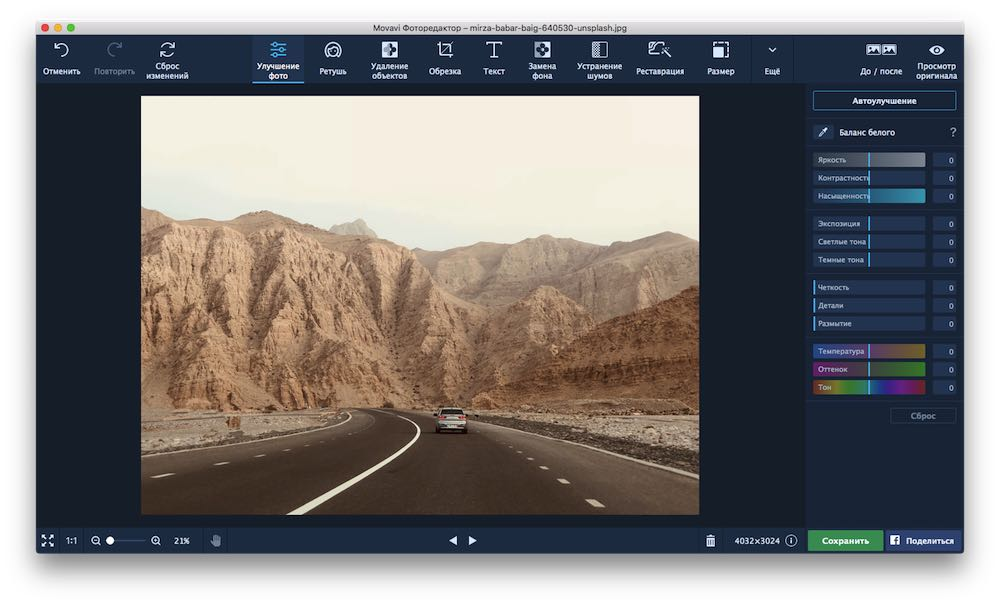
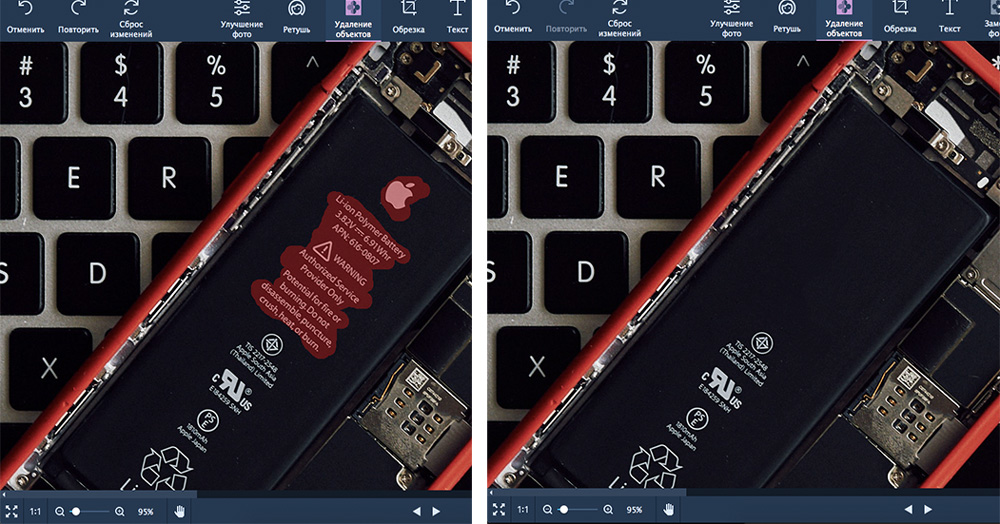

Графічний редактор Movavi Photo Editor
Movavi Photo Editor нагадує суміш Photoshop, Lightroom та Pixelmator. Це програма з досить значними можливостями, при цьому не перевантажена в інтерфейсі та загальному алгоритмі роботи. В освоєнні допомагають підказки - вони набагато інформативніші, ніж у тому ж Photoshop, тому звикаєш до елементів інтерфейсу швидко.
- Операційна система:Microsoft Windows/7/8/10
- Процесор:Intel Pentium Gold G6405 4.1 GHz / 4 MB
- Оперативна пам'ять:2 GB
- Відеокарта:NVIDIA GeForce series 8, Intel HD Graphics 2000, AMD Radeon™ R600
- Вільне місце:500 MB
Системні вимоги
Інтерфейс
Перше, що впадає у вічі при запуску цієї програми, це його інтерфейс. Я звик бачити безліч невиразних інструментів і значків у всіх редакторах фотографій, які я використав у минулому, однак інтерфейс Movavi настільки чистий, наскільки вони можуть прийти. Але чистіший інтерфейс не повинен використовуватися як виправдання обмеженим можливостям. Я радий, що Movavi не йде цим шляхом і має достатні можливості, щоб задовольнити більшість своїх цільових користувачів. Тепер обговорити їх все тут неможливо, тому я вирішив згадати лише 5 основних функцій програми.
Особливості
Сам редактор досить функціональний для людей, які не мають ні бажання, ні часу вчити Lightroom або інші редактори. Як правило, подібні програми перевантажені інструментами і просто заплутують у процесі роботи. Тут все навпаки: мені хотілося знайти більше, але робити це не було чого - з простою обробкою сімейних фотографій або знімків природи програма справляється чудово і без додаткових функцій. Здивувала робота інструменту для видалення зайвого на фото — працює не гірше за аналог у Photoshop, але набагато швидше і простіше у використанні.
Наприклад, щоб прибрати зайві написи або просто пил, бруд та інші дрібні огріхи, потрібно спочатку виділити пензлем непотрібне, а потім один раз натиснути на кнопку редагування. Спершу здавалося, що це не практично – не видно результату для великої області, доки не виділиш усе і не натиснеш кнопку. Пізніше виявилося, що це зовсім не потрібно — функція добре справляється і видає результат, якого навіть не очікував.
Переваги та недоліки
Переваги
- Історія редагування
- Малі системні вимоги
- Демократична цінова підписка
- Велика кількість ефектів
- Підтримує багато форматів
- Низький поріг входження
Недоліки
- Коштує гроші
- У демо-версії неможливо зберегти фото або зробити скріншот